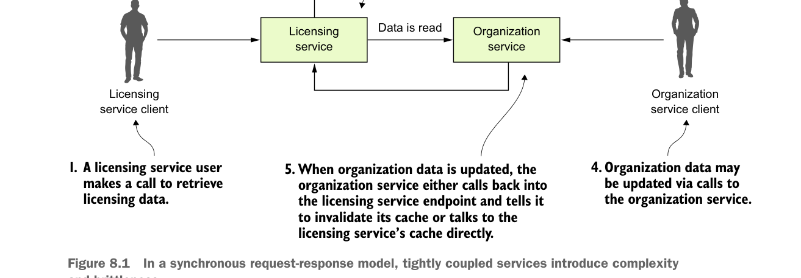

Trong mô hình request-response đồng bộ, các dịch vụ ghép chặt gây ra sự phức tạp và dễ vỡ vụn.
rồi lưu dữ liệu trả về vào Redis, trước khi trả dữ liệu tổ chức lại cho người dùng. Giờ, nếu ai đó cập nhật hoặc xóa bản ghi tổ chức bằng REST endpoint của organization service, organization service sẽ cần gọi một endpoint được expose trên licensing service để báo nó vô hiệu hóa dữ liệu tổ chức trong bộ nhớ đệm của nó. Trong hình 8.1, nếu bạn nhìn vào chỗ organization service gọi ngược lại licensing service để báo nó vô hiệu hóa bộ nhớ đệm Redis, bạn sẽ thấy ít nhất ba vấn đề:
- Organization service và licensing service bị ghép chặt với nhau.
- Sự ghép chặt này đã tạo ra tính dễ vỡ vụn giữa các dịch vụ. Nếu endpoint vô hiệu hóa bộ nhớ đệm trên licensing service thay đổi, organization service cũng phải thay đổi theo.
- Cách tiếp cận này thiếu linh hoạt vì bạn không thể thêm consumer mới cho dữ liệu tổ chức mà không sửa code trên organization service — organization service phải biết và gọi dịch vụ kia để thông báo về thay đổi.
Ghép chặt giữa các dịch vụ
Trong hình 8.1 bạn có thể thấy sự ghép chặt giữa licensing service và organization service. Licensing service luôn phụ thuộc vào organization service để lấy dữ liệu. Tuy nhiên, khi organization service trực tiếp giao tiếp ngược lại licensing service mỗi khi bản ghi tổ chức được cập nhật hoặc xóa, bạn đã tạo ra sự ghép chặt ngược lại từ organization service tới licensing service.